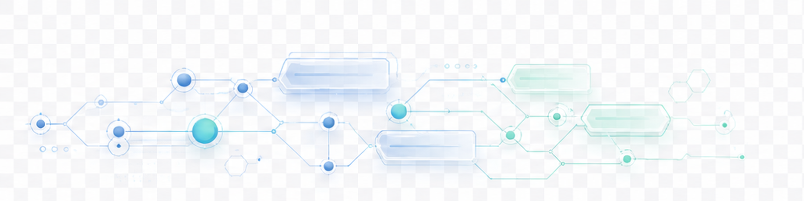

Route intelligence
Mission nodes are generated from the local study deck.
Domains, drills, and quiz gates come from `data/app-data.js`, so the 3D shell stays connected to the existing content instead of becoming a separate demo.